「血糖监测」
-

美敦力胰岛素泵·售后服务
“多多关注血糖变化，准备好所有应急措施。随身携带测量设备。记录血糖变化。如果碰到不正常的波动，应及时向医生反应。”
-

省级医院·糖尿病科医生
“日常血糖监测注意事项有：A、有突发情况发生时，要增加监测，比如患其他急性疾病时，不能规律进餐时，情绪激动时等。 B、做好记录血糖日志，包含血糖、饮食、运动、用药情况等。C、定期校准血糖仪，保证检测准确。”
-

糖尿病患者·带病10年
“每天多次测血糖，一般是空腹，饭后，还有随机等。每一次测量的数据都要心中有数或者记录下来。”
小贴士
· 参考方面 ·
-

空腹血糖
是指禁食7-12小时、早餐前测定的血糖值，宜在清晨6：00-7：00进行。其反映您在无糖负荷刺激状态下的基础胰岛素的分泌情况； 可以反映头一天晚间用药是否可以控制血糖到次日晨，它受到黎明现象与苏木杰反应的干扰； 空腹血糖也是诊断糖尿病的指标之一
-

餐前血糖
则包括早餐前、午餐前和晚餐前血糖。应注意的是，早餐前血糖既可以是空腹血糖，也可以不是空腹血糖（即不一定要禁食7小时以上），二者概念不完全一样。餐前血糖可指导患者调整将要吃人的食物总量和餐前注射胰岛素(或口服药)的量。正常人餐后2小时血糖和午餐前血糖之差应大于1.0毫摩尔／升，若差值大，表示胰岛后续功能好；若差值小，表示胰岛后续功能差，或药量不足。对餐前高血糖的治疗与餐后2小时高血糖相同，只是药量应大一些
-

餐后2小时血糖
是指三餐（早、午、晚）后二小时（从进食第一口食物时开始计算时间）所测定的血糖值。它主要反映患者胰岛B细胞的储备功能(增加糖负荷后机体追加胰岛素分泌的能力)以及饮食控制和药物治疗的综合疗效。测定餐后2小时血糖有助于2型糖尿病的早期诊断，因为许多早期糖尿病患者空腹血糖并不高，但因其胰岛素分泌功能已经受损，受高糖刺激后反应较差，因而表现为餐后血糖明显升高。此外，餐后高血糖还是导致糖尿病慢性并发症的重要因素
-

随机血糖
是指一天中任意时间测定的血糖值，包括睡前血糖、夜间血糖等。睡前血糖反映胰岛B细胞对进食晚餐后高血糖的控制能力。监测睡前血糖主要是为了指导夜间用药或注射胰岛素剂量，以避免夜间发生低血糖。 凌晨3点的血糖监测凌晨3点血糖有助于鉴别空腹高血糖的原因，究竟是“黎明现象”还是“苏木杰反应”，这两种情况的临床处理截然不同

小结
关于有氧运动，美国糖尿病学会（ADA）建议的有强度为：运动时心率达到最大心率（220减去年龄）的60-75%（用VO2max推算的对应心率）。监控心率可以用心率表。一周运动总共时间不少于150分钟。适当运动能够帮助治疗糖尿病以及缓解一些症状。具体情况应该与医生商量。锻炼效果和需求也因人而异
返回顶部